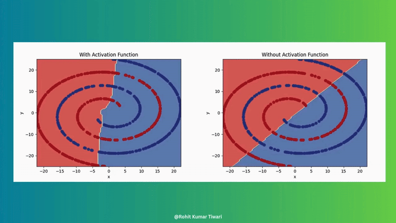

Neural network training
1. Introduction to the process of training neural network
In order to train a good nerual network model, you need to do the data preprocessing and understand the struture of the model. There are several different models available and the struture is slightly different. Here, we would just focus on the basic component of the neural network model.
2. Data Preperation
For any kind of Neural network model, you need to remember that garbage in garbage out. Raw omics data often contains noise, missing values, and irrelevant features that can degrade model performance. Proper data preparation ensures that the input data is clean, consistent, and informative, allowing the neural network to learn meaningful patterns effectively.
2.1. Data Cleanup
Here is the basic step for you to do the cleanup in Multi-modal omic data:
- Remove Low-Variation Features and Samples:
- Features or samples with very low variation (e.g., constant values across samples) or too many missing values (NAs) are removed.
- Reason: Low-variation features provide little information for distinguishing between samples, while samples with excessive missing data are unreliable for training.
- Impute Missing Values:
- Remaining missing values (NAs) are imputed using the median value of the feature across samples.
- Reason: Imputation ensures that the dataset is complete, avoiding the need to discard potentially useful features or samples with a small number of missing values.
- Rank Features Using Laplacian Scores:
- Features are ranked based on their Laplacian Scores, a method that evaluates feature importance by considering relationships between samples in a network structure (not just variance).
- Reason: Unlike variance-based methods, Laplacian Scores account for the global structure of the data, identifying features that are more likely to be biologically relevant.
- Remove Highly Correlated Features (Optional):
- Highly correlated features are identified, and the feature with the lower Laplacian Score is removed.
- Reason: Redundant features add unnecessary complexity to the model without providing additional information, so removing them reduces dimensionality and prevents multicollinearity issues. However, remember to Log Removed Features for potential biological interpretation.
- Select Top Features:
- Retain the top percentile of features (normally 20%) based on Laplacian Scores.
- Reason: Focusing on the most informative features reduces the dimensionality of the data (mitigating the curse of dimensionality) and ensures the model learns from the most relevant signals.
Additional Notes:
- Biological Context: High-variance features may not always be meaningful (e.g., non-coding RNAs might show high variance due to noise). Laplacian Scores help mitigate this by focusing on sample relationships rather than just variance.
- Batch Effects: High variance in omics data may stem from batch effects (systematic biases). Applying batch correction before cleanup can address this issue.

2.2. Harmonize Training and Testing Datasets
After the data cleanup, the dataset need to be seprate into training group and testing group. In [Note 1: Supervising Learning](module1/supervised.html) section 3, you could see how to seperate dataset. In addition to the seperation, the training and testing datasets must be consistent in terms of features and scaling to ensure fair evaluation. If the training and testing datasets have different feature sets or scaling, the model may fail to generalize. This step is critical for reliable model evaluation and for ensuring that predictions are meaningful in a clinical context.
Followings are the common steps of Harmonizing:
Feature Intersection :
Ensure that the training and testing datasets share the same features by taking the intersection of their feature sets.
Example: If the training data includes Genes A, B, C, D, E, but the testing data only has Genes A, B, C, the model uses only Genes A, B, C for both datasets.
Reason: Using different feature sets for training and testing would make the model incompatible with the testing data, leading to poor performance and unreliable predictions.
Standardization:
Compute scaling factors (mean and standard deviation) from the training data only.
Apply these scaling factors to both the training and testing data to standardize them (e.g., subtract the mean and divide by the standard deviation).
Reason: Standardizing ensures that features are on the same scale, which is essential for neural networks to learn effectively. Using training data to compute scaling factors prevents data leakage, as the testing data remains unseen during this process.
Transform Testing Data:
The testing data is transformed by using the scaling factors (Mean and standard deviation) learned from the training data in Standardization step.
Reason: Using the training data’s scaling factors ensures that the testing data is processed in the same way as the training data, maintaining consistency in scale and distribution. This mimics real-world scenarios where the model only has access to training data during training and must apply learned parameters to new, unseen data.
Example:
Training data for a feature (e.g., Gene A): [10, 20, 30, 40, 50].
Mean = 30, Standard Deviation ≈ 14.14.
Standardized training data: [-1.41, -0.71, 0, 0.71, 1.41].
Testing data for the same feature: [15, 45].
Using training data’s ( Mean = 30) and ( Standard Deviation = 14.14), standardize the testing data:
15 → ((15 - 30) / 14.14 ≈ -1.06)
45 → ((45 - 30) / 14.14 ≈ 1.06)
Standardized testing data: [-1.06, 1.06].
Both datasets are now on the same scale, ensuring the model can process them consistently.
Additional Notes:
Avoiding Data Leakage: Standardizing both datasets using parameters from the training data ensures that the model does not inadvertently learn from the testing data, which would inflate performance metrics and lead to overly optimistic results.
Feature Consistency: The feature intersection is crucial for multi-modal data, as different modalities (e.g., gene expression, mutations) may have varying feature availability across datasets.
Practical Tip: When working with biological data, always verify that the features retained after intersection are biologically relevant to the task (e.g., cancer-related genes for oncology applications).

3. Components of a Neural Network
There are several different kinds of Neural Network Structure. Here, I will introduce a basic structure and Key Components of Neural Network. And this is the video about the background of the neural network.
3.1. Basic Structure

- Input Layer:
Receives raw data (e.g., features like gene expression values).
Number of nodes equals the number of input features.
- Hidden Layers:
Process the input data through weighted connections and activation functions.
Number of hidden layers and nodes per layer are hyperparameters to be tuned.
- Output Layer:
Produces the final prediction.
Number of nodes depends on the task (e.g., 1 node for binary classification, multiple nodes for multi-class classification).
3.2. Key Components
Neurons/Nodes
Basic units that receive inputs, apply weights, and pass the result through an activation function.
Weights
Parameters that determine the importance of each input, adjusted during training.
Activation Functions
Introduce non-linearity (e.g., ReLU, sigmoid) to allow the network to learn complex patterns. Without this, neural networks couldn’t make the magic. Example1

Loss Functions
Measure the error between predictions and true values, guiding weight updates.
Optimizer
- Why This Is Necessary: In neural network training, the model generates predictions via forward propagation and computes the error using a loss function. To minimize this error, the model’s parameters (weights and biases) need to be adjusted. However, finding the optimal solution in a high-dimensional, complex loss function is challenging without a systematic approach. The optimizer provides a method to iteratively update parameters based on gradients, ensuring efficient convergence to a minimum loss.
- What It Achieves: The optimizer enables the model to efficiently and stably converge to a low-loss state, improving prediction accuracy. Different optimizers adapt to various data characteristics and network architectures, helping to overcome issues like slow convergence, instability due to high learning rates, or getting trapped in local minima.
- Common Types:
- Stochastic Gradient Descent (SGD): Updates parameters using gradients from a single sample or small batch, simple but may converge slowly or oscillate. - Momentum: Adds a momentum term to SGD, accelerating updates and helping escape local minima. - Adam (Adaptive Moment Estimation): Combines momentum and RMSProp, adaptively adjusts learning rates, widely used for its fast and stable convergence. - RMSProp: Adjusts learning rates based on the moving average of squared gradients, suitable for non-stationary objective functions.
- Notes: The choice of optimizer and its hyperparameters (e.g., learning rate) is often tuned via hyperparameter optimization (HPO) to suit specific tasks.
Hyperparameters
Gradient Descent: Iteratively adjusts weights in the direction that reduces the loss. Step size is determined by the learning rate. Article
Learning Rate: Step size for weight updates. Here are some articles about how to set up the learning rate: Article 1, Article 2

- Batch Size: Number of samples processed before updating weights.

Epochs: Number of complete passes through the training data.
Hidden Units: Number of nodes in hidden layers.
(Here is the article explain what is Batch Size, Epochs, and Hidden Units. Article)
4. Neural Network Training Process

References
Article:
- https://towardsai.net/p/machine-learning/introduction-to-neural-networks-and-their-key-elements-part-c-activation-functions-layers-ea8c915a9d9
- https://awesomeneuron.substack.com/p/activation-functions-the-secret-sauce
- https://www.sabrepc.com/blog/Deep-Learning-and-AI/Epochs-Batch-Size-Iterations
Image:
https://i2.wp.com/cdn-images-1.medium.com/max/550/1*pO5X2c28F1ysJhwnmPsy3Q.gif?s sl=1&w=800&resize=800&ssl=1
https://www.youtube.com/watch?v =1npWKwGaq9Q&ab_channel=AwesomeNeuron
https://miro.medium.com/v2/resize:fit:720/format:webp/1*Nq6UMjR0WyH0Q8sDYmSzaQ.gif